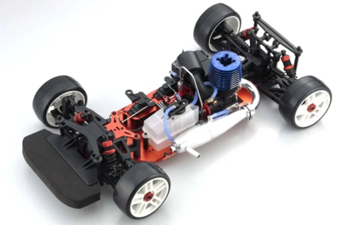

京商 インファーノGT2

引用元画像：京商公式サイト
📋 基本情報
| メーカー | 京商（Kyosho） |
|---|---|
| 機種名 | インファーノGT2（Inferno GT2） |
| シャーシ略称 | インファーノGT2 |
| 型番 | 31816, 31817, 31827, 31828（ボディ別） |
| 発売時期 | 2008年 |
| 価格 | 詳細不明 |
| 生産状況 | 生産終了 |
| カテゴリー | ラジコンカー（1/8スケール エンジンRCカー） |
| サブカテゴリー | GTツーリングカー（4WD オンロード） |
| シリーズ | インファーノGTシリーズ 第2世代 |
📏 シャーシスペック
| 全長 | 詳細不明 |
|---|---|
| 全幅 | 詳細不明 |
| 全高 | 詳細不明 |
| ホイールベース | 詳細不明 |
| トレッド | 詳細不明 |
| タイヤ幅/径 | 詳細不明 |
| フレーム | プレート式シャーシ（高剛性設計） |
| 全備重量 | 詳細不明 |
⚙️ 駆動系
| 駆動方式 | 4WDシャフトドライブ |
|---|---|
| デフギヤ | ギヤデフ（標準装備） |
| ギヤ比 | 詳細不明 |
| ギヤピッチ | 詳細不明 |
| トランスミッション | 詳細不明 |
| ドライブシャフト | ドッグボーン式ドライブシャフト |
| エンジン | 別売 推奨：21クラスエンジン |
🔧 サスペンション
| 形式 | 4輪ダブルウィッシュボーン独立懸架 |
|---|---|
| サスアーム | 詳細不明 |
| ダンパー | オイルダンパー×4本 ※コイルスプリング式 |
| ステアリング | 詳細不明 |
| ベアリング | フルボールベアリング装備 |
💡 特徴
インファーノGTの進化モデル
- 2008年にリリースされた第2世代GTツーリングカー
- 初代GTからの改良と進化を実現
- 4WDシャフトドライブシステム継続採用
- プレート式シャーシで高剛性を維持
豊富なボディバリエーション
- CHEVROLET CORVETTE C6-R 2007（31816）
- AUDI A4 DTM 2007（31817）
- McLaren F1 GTR Kokusaikaihatu Racing（31827）
- Aston Martin Racing DBR9 No.009 LM 2008（31828）
洗練されたレーシング性能
- 改良されたギヤデフ設計（精密な駆動力伝達）
- 最適化されたオイルダンパー（安定した走行性能）
- ドッグボーン式ドライブシャフトで効率的なパワー伝達
- 21クラスエンジンに対応した高パフォーマンス設計
- 初代GTからのフィードバックを反映した改良点多数
🔧 ぽすとそに工房での修理実績
修理難易度
★★★★★（非常に難しい）
生産終了しており、パーツが希少なため、修理には高度な技術と代替パーツの知識が必要です。
よくある故障・注意点
- パーツ入手困難：生産終了により純正パーツの入手が非常に困難
- ギヤデフの摩耗：長期使用でギヤデフの精度が低下
- オイルダンパーのオイル漏れ：経年劣化によるシール不良
- ドライブシャフトの摩耗：高負荷時の摩耗に注意
- ベアリングの固着：長期保管時の注意が必要
修理のポイント
- 互換パーツの活用：GT3やインファーノMP9系の一部パーツが流用可能な場合あり
- ギヤデフのメンテナンス：定期的なグリスアップと点検
- オイルダンパーのオーバーホール：Oリング交換とオイル補充
- ベアリングの定期交換：固着前の予防的交換推奨
- ボディの保護：GT2専用ボディの保存状態が重要
その他の特徴
- 初代GTよりも洗練された設計
- GT3へのアップグレードパスあり
- コレクターズアイテムとしても人気
- 2000年代後半のレーシングシーンで活躍